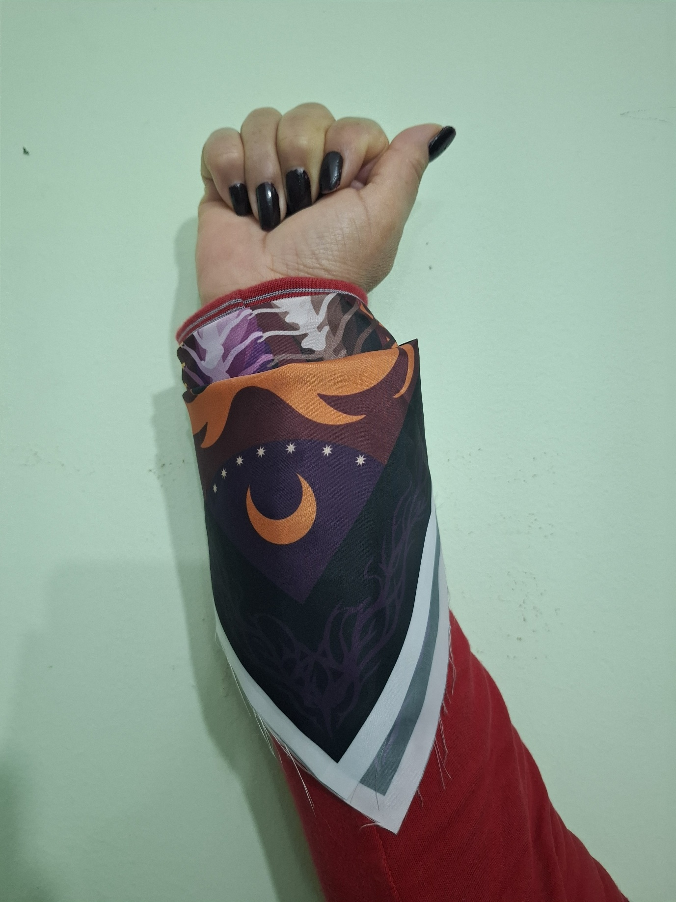
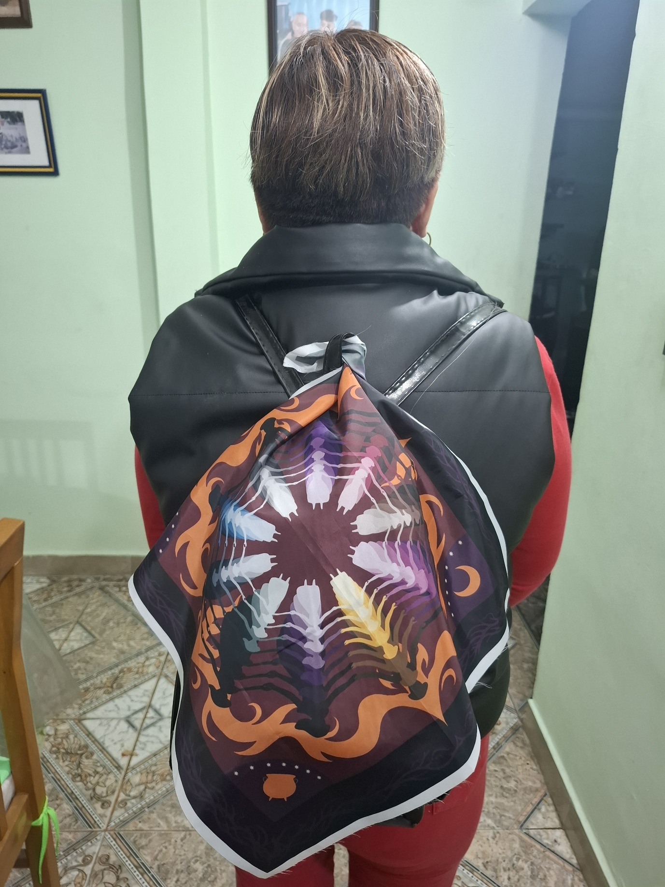

La propuesta del pañuelo
El desarrollo del pañuelo parte de la lectura de “Calibán y la bruja”, de Silvia Federici, una obra que analiza la caza de brujas como un proceso de persecución y disciplinamiento de las mujeres durante la transición al capitalismo.
Desde esa investigación, la propuesta reflexiona sobre los saberes femeninos históricamente deslegitimados, perseguidos o eliminados: conocimientos vinculados al cuidado, la medicina popular, la relación con la naturaleza y las formas comunitarias de organización.
Lo que perdimos en el fuego
Durante el proceso apareció el concepto de “lo que perdimos en el fuego”. El fuego funciona como metáfora de la violencia ejercida sobre las mujeres y sobre sus conocimientos, pero también como un elemento de transformación.
La intención no fue representar únicamente la destrucción, sino pensar aquello que logró sobrevivir y permanecer en la memoria colectiva a pesar de los intentos de erradicarlo.
Comunidad, ausencia y memoria
Visualmente, el diseño está construido a partir de una composición circular de figuras femeninas. Esta organización simboliza la comunidad, el encuentro y la transmisión de conocimientos entre mujeres.
Las figuras rodean un vacío central que representa la ausencia dejada por las persecuciones históricas y por los saberes silenciados o perdidos. Esa ausencia se vuelve tan significativa como las presencias: permite visualizar aquello que ya no está, pero cuya huella continúa existiendo.
Raíces, ciclos y diversidad
Alrededor del círculo aparecen llamas que remiten al fuego de las persecuciones, pero también a la transformación y la resistencia. Los elementos lunares aluden a los ciclos naturales y a la conexión histórica de las mujeres con la observación de la naturaleza.
El marco de raíces representa memoria, vínculos y permanencia. Aunque permanecen ocultas bajo la superficie, las raíces continúan conectando y sosteniendo la vida, del mismo modo que estos saberes persisten en la cultura y la memoria colectiva.
La paleta cromática refuerza la idea de diversidad: los distintos colores de las figuras femeninas representan la continuidad entre experiencias, identidades y generaciones.
Reflexión de la actividad
El proyecto permitió profundizar en el valor de la investigación como parte fundamental del proceso proyectual y comprender la importancia de construir una propuesta visual sustentada en un marco conceptual sólido.
La pieza materializa una reflexión sobre aquello que fue perseguido y silenciado, pero también sobre la capacidad de las comunidades para conservar y transmitir conocimientos a través del tiempo.
Galería del pañuelo



Propuesta realizada por Christian Campos Bayes en el marco de Taller de Diseño III, orientación Textil, junto con el LAD (Laboratorio de Diseño).